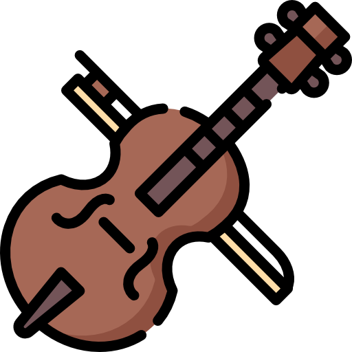
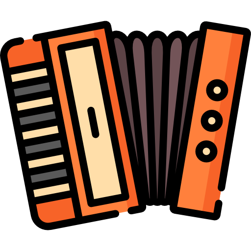

Music
Music is not just a hobby; it's an integral part of who I am. It's a means of communication and self-expression that continues to enrich my life. I look forward to the ongoing journey and the music yet to be created.
Click on the instrument icons for more information about my journey with each instrument.

Piano

Cello

Tuba

Saxophone
